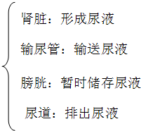

2017年北京市海淀区中考生物试题 · 选择题 第16、17、18、19、20题 · 对应解析
16. 人体形成尿液的器官是（ ）
A.  B.
B.  C.
C.  D.
D. 
【答案】B
【解析】
【分析】泌尿系统的组成及各部分的功能：

【详解】A、心脏是血液循环的动力器官，属于循环系统，A错误。
B、泌尿系统主要是由肾脏、输尿管、膀胱和尿道组成的。其中人体形成尿液的器官是肾脏，肾脏是形成尿液的场所，B正确。
C、肝脏分泌胆汁，胆汁中不含消化酶，但其中的胆盐可以乳化脂肪，将大的脂肪乳化成脂肪微粒，加大了脂肪与消化液的接触面积，促进脂肪的消化，C错误。
D、肺是气体交换的场所，D错误。
故选B。
【点睛】理解泌尿系统的组成和各部分的功能是关键。
17. 看书一个小时后，向远处眺望一会儿，可以预防近视眼，主要原因是（ ）
A. 使调节瞳孔中的神经得到休息
B. 使视神经得到休息
C 使视觉中枢得到休息
使视觉中枢得到休息
D. 使调节晶状体的肌肉得到放松
【答案】D
【解析】
【分析】正常人看远近不同的物体时，通过晶状体的调节作用，都能使远近不同的物体反射来的光线汇聚在视网膜上，形成清晰的物像。视近物时，晶状体的曲度大；视远物时，晶状体的曲度小。
【详解】看书一小时后，向远处眺望一会儿，可以使调节晶状体的肌肉（睫状体）放松，使晶状体的曲度变小，有利于促进眼的血液循环，加强眼的营养，保护视力、预防近视。可见D符合题意。
【点睛】解答此类题目的关键是理解视远物时，调节晶状体的肌肉（睫状体）放松，晶状体的曲度小。
18. 下列反射活动中，属于人类特有的是（ ）
A. 看见食物分泌唾液B. 吃食物分泌唾液
C. 拍打叮咬自己的蚊虫D. 谈虎色变
【答案】D
【解析】
【分析】（1）人和动物都能对具体刺激建立反射如简单反射和具体条件刺激的复杂反射，如常打针的小孩看到穿白衣服的护士就会哭，狗看见拿木棍的人会逃跑，表明人和动物都能对具体条件引起的刺激建立条件反射。
（2）人与动物最大的区别在于人类有特有的语言中枢，因此人类特有的反射是通过大脑皮层的语言中枢对抽象的语言文字、符号、特征建立的条件反射。
【详解】看见食物分泌唾液、吃食物分泌唾液、拍打叮咬自己的蚊虫，都是具体条件刺激引起的反射，人和动物共有；谈虎色变是通过大脑皮层的语言中枢形成的人类特有的反射。
【点睛】解答此类题目的关键是理解人类特有的条件反射的特点有语言中枢的参与的反射。
19. 下列叙述中，不属于大熊猫的特征是（ ）
A. 细胞具有细胞壁B. 是生态系统中的消费者
C. 是多细胞生物D. 有能分解食物的消化系统
【答案】A
【解析】
【分析】大熊猫属于哺乳动物，哺乳动物的特征，即：胎生哺乳，体表被毛覆盖，体腔内有膈，牙齿分为门齿、臼齿、犬齿，心脏四腔，用肺呼吸，体温恒定等。
【详解】动物和植物细胞都有细胞膜、细胞质、细胞核和线粒体；动物细胞没有而植物细胞具有的结构是细胞壁、叶绿体和液泡，大熊猫为哺乳动物，细胞中没有细胞壁，A符合题意；消费者动物在维持生态平衡有着重要作用，促进生态系统中的物质循环，大熊猫是生态系统中的消费者，B不符合题意；自然界中的生物多种多样，有单细胞的，有多细胞的，大熊猫是多细胞生物，C不符合题意；大熊猫消化系统能将食物切断、撕裂、磨碎，分泌消化液，并将食物与消化液充分混合，从而将食物消化；并将食物中的营养物质吸收到循环系统中，D不符合题意。
【点睛】解题的关键是知道哺乳动物的主要特征。
20. 海蜇和珊瑚虫排出消化后食物残渣的结构是（ ）
A. 肛门B. 口C. 胞肛D. 体壁
【答案】B
【解析】
【分析】腔肠动物是有口无肛门的动物，食物残渣都是由口排出体外。
【详解】海蜇和珊瑚虫属于腔肠动物，身体结构简单、辐射对称、有口无肛门，食物由口进入，食物残渣仍然由口排出。
【点睛】解答此题的关键是明确腔肠动物有口无肛门，食物由口进入，食物残渣仍然由口排出。